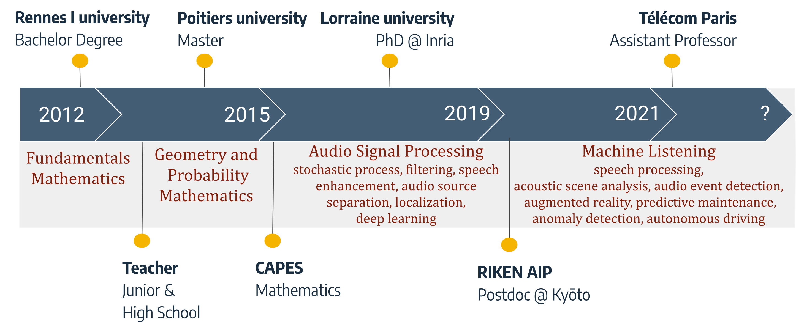
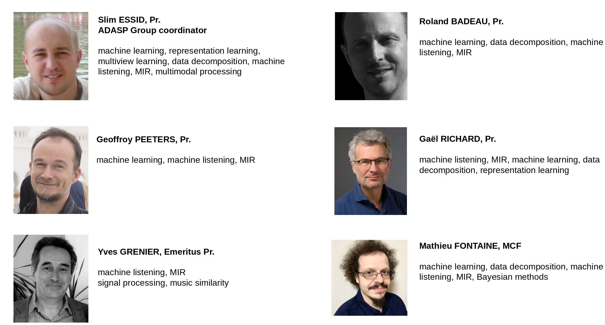
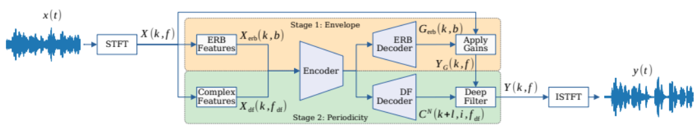
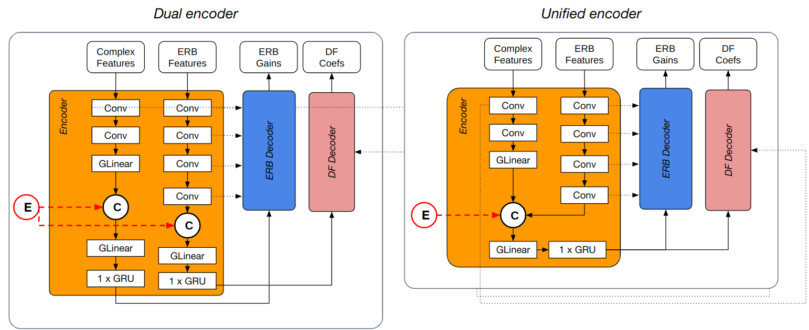
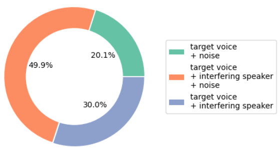
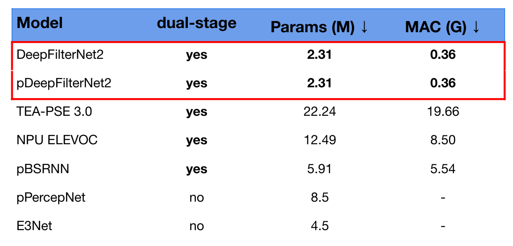
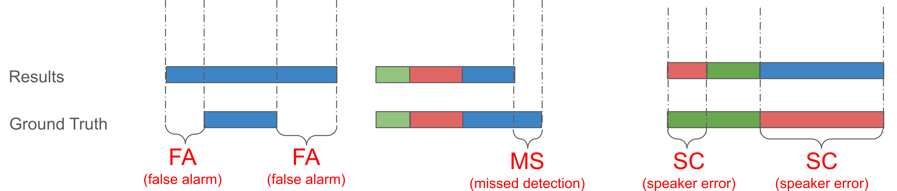

ADASP presentation + Overview of Speech Related Topics at Télécom Paris
Kyoto University SAP - Seminar
April, 23rd 2024
matfontaine.github.io/SAP24

Brief Introduction
- Born in Le Mans (200 km west of Paris)
- Currently: Associate Professor at Télécom Paris in ADASP Group
- Guest Researcher at RIKEN AIP @ Kyoto University
Audio Data Analysis and Signal Processing (ADASP) Group
- Advanced grant ERC "Hi-Audio" (G. Richard), BPI Project "Audible" (S. Essid), ANR AQUARIUS (G. Peeters), ANR JCJC SAROUMANE (M. Fontaine)
- Lab LISTEN with 4 industrial partners (Valéo, Sony AI, Orosound & BruitParif)
- Currently: 20 PhD Students, 4 Post-Docs, 7 Research Engineers
ADASP in ICASSP 2024
- 10 papers accepted
- Various audio topics: MIR, speech processing, audio generation etc.
- 3 presentations & 7 posters
Current PhD Supervision
LISTEN Lab
Anomaly detection in locally stationnary time series
Spatio-temporal analysis of sound scenes for assisted and automated driving
Personalized speech enhancement in real-time through deep learning
Academic PhDs

Audio dereverberation by hybrid deep neural modeling
Online multi-channel speaker diarization and localisation in the wild
Joint separation and dereverberation of moving speakers
Generative models for Speaker Diarization
Current PhD Supervision
LISTEN Lab
Anomaly detection in locally stationnary time series
Spatio-temporal analysis of sound scenes for assisted and automated driving
Personalized speech enhancement in real-time through deep learning
Academic PhDs
Audio dereverberation by hybrid deep neural modeling
Online multi-channel speaker diarization and localisation in the wild
Joint separation and dereverberation of moving speakers
Generative models for Speaker Diarization
Other Research Collaboration soon
- CIEDS project (3 Post-Docs, 3 PhDs and 1 research engineer) with G. Franchi (ENSTA), M. Labeau (Télécom Paris) and V. Kalogeiton (Polytechnique) on Multimodal deep fake model
Outline of today
I - Mathieu's talk:
I.1 - Lightweighted Personalized Speech Enhancement $\tiny\texttt{[Ser. 24]}$
I.2 - Online Speaker Diarization Guided by Speech Separation $\tiny\texttt{[Gru. 24]}$
Questions for 5-10 min
II - Louis' talk: Deep speech dereverberation using physics-driven constraints
Questions for 5-10 min
III - Alain's talk: Self-supervised learning for pitch and tempo estimation $\tiny\texttt{[Rio. 23]}$
Questions for 5-10 min
- E. Gruttadauria et al. (2024). Online Speaker Diarization of Meetings Guided By Speech Separation, ICASSP
- T. Serre et al. (2024). A lightweight dual-stage framework for personalized speech enhancement based on DeepFilterNet2, ICASSP (HSCMA workshop)
- A. Riou et al. (2023). PESTO: Pitch Estimation with Self-supervised Transposition-equivariant Objective, ISMIR [Best paper award]
I - Lightweighted Personalized Speech Enhancement
Speech Enhancement
Personalized Speech Enhancement (PSE) (1/2)
Personalized Speech Enhancement (PSE) (2/2)
Goals
- Extract an embedding of the user’s voice
- Use this embedding to extract the voice in a noisy content
Noise environment
- Non vocal-noise and interfering voice(s)
Build a PSE model: two strategies
- Adapt an existing SE framework $\texttt{[Gir. 21, Esk. 21]}$
- Create a framework for PSE from scratch that is:
$\quad \rightarrow$ strong but heavy $\texttt{[Ju 23]}$
$\quad \rightarrow$ weaker but lighter $$ $\texttt{[Wan. 20, Tha. 22]}$
- R. Giri et al. (2021). Personalized percepnet: Real-time, low-complexity target voice separation and enhancement, INTERSPEECH.
- S. Eskimez et al. (2022). Personalized speech enhancement: New models and comprehensive evaluation, ICASSP.
- Y. Ju et al. (2023). TEA-PSE 3.0: Tencent-Ethereal-Audio-Lab Personalized Speech Enhancement System, ICASSP.
- Q. Wang et al. (2020). Streaming targeted voice separation for on-device speech recognition, INTERSPEECH.
- M. Thakker et al. (2022). Fast real-time personalized speech enhancement: End-to-end enhancement network (e3net) and knowledge distillation, INTERSPEECH.
From SE to PSE: pPercepNet $\texttt{[Gir. 21]}$
- Own speaker embedder, or existing one (ECAPA-TDNN)
- Embedding before reccurent layers
- R. Giri et al. (2021). Personalized percepnet: Real-time, low-complexity target voice separation and enhancement, INTERSPEECH.
From "Nothing" to PSE
Dual Stage Models
- Dual stage models: top 5 of Deep noise suppression (DNS) challenge 5
- Example for TEA-PSE3:
$\quad\rightarrow$ stage 1: coarse estimation on magnitude
$\quad\rightarrow$ stage 2: finer estimation with complex magnitudes
Real time but heavy
Compact PSE
- Based on knowledge distillation, model compression etc.
Real time, light but not dual stage
Proposed method: adapt a lightweight dual stage SE algorithm for PSE ?
DeepFilterNet2 $\texttt{[Sch. 22]}$
- SOTA results in SE
- Only 2.31M of parameters and 0.4G of MAC
- Dual stage framework 
- 1: Coarse estimation using Equivalent Rectangular Bandwidth (ERB) features
- 2: Finer estimation using complex features and deep filtering
- $\mathcal{L} = \lambda_{\text{spec}} \mathcal{L}_{\text{spec}} + \lambda_{\text{MR}} \mathcal{L}_{\text{MR}}$
$\quad\rightarrow \mathcal{L}_{\text{spec}}:$ loss on spectrogram
$\quad\rightarrow \mathcal{L}_{\text{MR}}:$ multiple resolution loss
- H. Schröter et al. (2022). Deepfilternet2: Towards real-time speech enhancement on embedded devices for full-band audio, IWAENC.
Proposed Personalized DeepFilterNet2
- pDeepFilterNet2: Unified Encoder
- pDeepFilterNet2$_{\text{both}}$: Dual Encoder and E on CF and ERB
- pDeepFilterNet2$_{\text{ERB}}$: Dual Encoder and E on ERB
- pDeepFilterNet2$_{\text{DF}}$: Dual Encoder and E on CF
Training Data
- Target Voice: Librispeech (2.4k speakers)
- Noise: Freesound, Audioset (DNS5 noise data)
- Interfering voice: Librispeech + Mozilla Common Voice (7k voices)
Dataset Statistics
- Total duration: 800h (and 50h for validation)
- SNR: $\mathcal{N}(15,15)$ (limited at $[-5,35]$ dB)
- SIR: $\mathcal{N}(10,10)$ (limited at $[-5,25]$ dB)

Results on Synthetic Test Set
- VCTK speech
- SNR: $[-5,35]$ dB
- SIR: $[-5,25]$ dB
- $3600$ files of $5$s
- Noise type equally distributed
The unified encoder system seems to be better
Audio Demonstration (1/2)

Audio Demonstration (2/2)

Results on Real Data
- DNS5 Blind Test Set
- Headset or Speakerphone
- Metric PDNSMOS: DNN train to perform MOS
Results does not achieve the one of TEA-PSE3
Complexity
The complexity is highly lower compare to TEA-PSE3
Takehome Message
- Personnalize DeepFilterNet2: a lightweight dualstage SE algorithm
- The computational cost of the personalization is minimized
- Don't achieve for now competitive results with the SOTA
Future Works
- Oversuppression loss to add and VAD
- Diagnosis of the results
- Work on the embeddings
More results available at https://pdeepfilternet2.github.io/
II - Online Speaker Diarization & Speech Separation
Speaker Diarization ?
$$ \text{Diarization Error Rate (DER):} \frac{\text{FA} + \text{MS} + \text{SC}}{\text{Total}} $$
Speaker Diarization: who speak and when ?
Cascaded System vs. EEND (1/2)
A Clustering Problem
Cascaded System vs. EEND (2/2)
Multilabel Classification Over Frames

- Fujita et al. (2019). End-to-end neural speaker diarization with self-attention, INTERSPEECH.
Limitation in SD and Lines of Research
Limitations
- Overlapped speech detection and correct assignment
- Robusness (acoustic characteristics, turn-taking)
- Lack of research on online models (which is the goal here): $\quad \rightarrow$ online inference: predictions with limited information
$\quad \rightarrow$ hard with no enrollment speech or total number of speakers information
Limitation in SD and Lines of Research
Limitations
- Overlapped speech detection and correct assignment
- Robusness (acoustic characteristics, turn-taking)
- Lack of research on online models (which is the goal here): $\quad \rightarrow$ online inference: predictions with limited information
$\quad \rightarrow$ hard with no enrollment speech or total number of speakers information
Research direction: speech separation guided diarization (SSGD)
- apply a voice activity detection (VAD) to the separated sources
- better performance on overlapped speech
- speech separation struggle on real data
- SSGD only for phone conversation (2 speakers max.)
Speech Separation: Well-Defined for Online SSGD ? (1/2)
- Metrics: $\quad \rightarrow \text{SNR: } 10\log_{10}\left(\frac{\left\|s\right\|^2}{\left\|s - \hat{s}\right\|^2}\right);\qquad \text{SI-SDR: } 10 \log _{10}\left(\frac{\left\|\frac{\hat{s}^\top s}{\|s\|^2} s\right\|^2}{\left\|\frac{\hat{s}^\top s}{\|s\|^2} s-\hat{s}\right\|^2}\right) $
- Training data: $\quad \rightarrow$ "almost fully" overlapped mixture
$\quad \rightarrow$ contains as many speakers as the number of outputs
Objective quality for various number of sources to separate ?
- Luo et al. (2019). Conv-TasNet: Surpassing Ideal Time-Frequency Magnitude Masking for Speech Separation, TASLP.
- Le Roux et al. (2019). SDR-half-baked or well done ?, ICASSP.
Speech Separation: Well-Defined for Online SSGD ? (2/2)
- Lines: ConvTasNet-5. Mixtures with 5 to 2 speakers
$\quad \rightarrow$ orange line: $5$ outputs and "zero" output are set to $\epsilon$ for stability
$\quad \rightarrow$ blue line: $N_{\text{spks}}$ is known and scores only btw. target and - Red cross: ConvTasNet with the exact number of speakers
Delicate for SSGD then ...
Proposed Approach: Separation, VAD & Stitching (1/2)
- Local prediction on overlapping $5$-second windows
- Either trained on LibriMix or AMI (headset)
- VAD fine tuned either as:
$\quad \rightarrow $ adapt only the VAD on the estimate of the SSep model
$\quad \rightarrow $ adapt VAD and SSep in a E2E fashion
Proposed Approach: Separation, VAD & Stitching (2/2)
- Local prediction stitched together using speaker embeddings and incremental clustering $\texttt{[Cor. 21]}$
- Coria J. et al. (2021). Overlap-aware low-latency online speaker diarization based on end-to-end local segmentation, ASRU.
Experimental Setup
Dataset
- Evaluation on AMI dataset (headset mix, one mic)
- Training dataset: AMI (headset) or LibriMix "mix_both"
- AMI evaluation protocol for evaluation
Architecture Setting and Training Details
- SSep: either ConvTasNet $\texttt{[Luo 19]}$ or DPRNN $\texttt{[Luo 20]}$
$\quad \rightarrow $ trained on LibriMix "mix_both" $3$-second segments
$\quad \rightarrow $ finetuned on AMI train set by lowering thhe learning rate - Final finetuning step uning the pretrained VAD from Pyannote
- Luo et al. (2019). Conv-TasNet: Surpassing Ideal Time-Frequency Magnitude Masking for Speech Separation, TASLP.
- Luo et al. (2020). Dual-path RNN: efficient long sequence modeling for time-domain single-channel speech separation, ICASSP.
Ablation Study on the Training Methodology
- Better performance for E2E optimization
- Pretraining SSep on real data additionally boost performance
- Worse Missing speech score (due to poor SSep performance ?)
Choice of the SSep Models
- Left bar: minimum latency (0.5 s)
- Right bar: maximum latency (5 s)
Performance wrt. the Number of Speaker and Overlap
- OVL-only scoring represents the performance on overlap speech sections only
Take-aways
- SSGD can be adapted to work on real data rather than only simulated mixtures
- Bad performance of SSep models can be mitigated with:
$\quad \rightarrow$ diarization finetuning on real data (local)
$\quad \rightarrow$ stitching mechanism based on speaker embeddings (global) - SSep improves diarization performance on overlapped speech
- Competitive with EEND benchmark
- Improving performances especially at low latency requirements
Future Works
- Understand the relationship between local and global prediction performance
Thank you ! Questions ?
Speech Related Topics